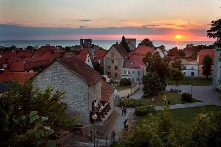

Visby
Anledningen är för att det är en otroligt vacker plats,
men också för dess rika historia.

Jag känner till lite koncept och grundläggande Python då jag studerade 1 år till
Dataanalytiker. Där lärde vi oss det för att effektivt kunna rensa data. Jag har noll
erfarenhet av webbutveckling.
Mina intressen är:
- Musikproduktion och ljuddesign inom elektronisk musik.
- Spelande, dator och konsol.
- Styrketräning, genuint en plåga de flesta dagar, men mår toppen av det efteråt.
Räknar ändå in som intresse då jag spenderar mycket tid på att lära mig om det
- Långa bilturer själv med musik eller podcast, terapeutiskt.
- Umgås med vänner och familj.